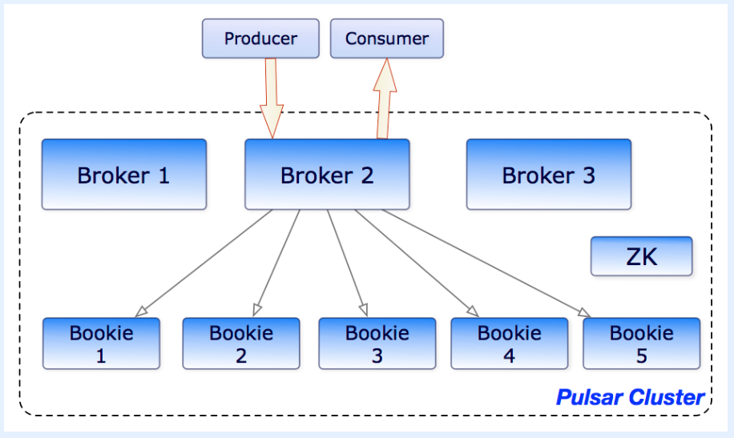
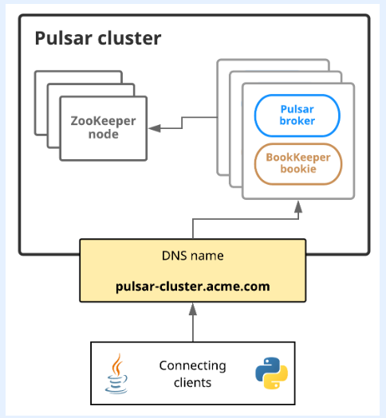

pulsar架构
概览
一个Pulsar实例由一个或者多个Pulsar集群组成。一个实例中的集群之间可以互相复制数据。 在一个Pulsar集群中：
- 一个或者更多的brokers的作用是：1.处理并负载均衡来自producers的消息 2. 将消息分派给consumers 3. 和Pulsar configuration store通信以便处理各种各样的协作任务 4.将消息存储在BookKeeper实例中(又叫bookies) 5.依赖于特定的Zookeeper集群来完成某些任务 6.其他
- 一个BookKeeper集群由一个或者多个处理消息的持久性存储的BookKeeper实例组成
- 一个ZooKeeper集群用来处理Pulsar集群之间的协作性任务
一个Pulsar集群的图示如下:

Brokers
Pulsar message broker是一个无状态组件，其主要功能就是运行两个其他的组件
- 一个Http服务器：该服务器功能为管理任务暴露REST API，为producers和consumers提供topic lookup功能。连接到brokers的producers可以发布消息，连接到brokers的consumers可以消费消息。
- 一个dispatcher: 它是一个异步的TCP服务器，它基于自定义的二进制协议，主要用来进行数据的传输
处于性能考虑，消息会从一个叫做managed ledger cache的地方发出，除非消息量超出了缓存(cache)大小。如果消息积压超过cache,broker会开始从BookKeeper中读取。
为了支持global topics的geo-replication,brokers通过追踪发布在本地区域的entries来管理复制器，并将entries重新发布到远程区域。
Clusters(集群)
一个Pulsar集群的组成部分：
- 一个或者更多数量的Pulsar brokers
- 一个拥有集群水平上的(cluster-level)配置和协作功能ZooKeeper仲裁机构
- 一个ZooKeeper实例组成的整体：用来负责消息的持久化存储
集群之间可以通过geo-replication来进行相互之间的复制。
Metadata store(元数据存储)
Pulsar元数据维护了一个Pulsar集群的所有元数据，比如:topic元数据、schema、broker load data等等。Pulsar使用Apache ZooKeeper来进行元数据的存储、集群配置、协调。Pulsar元数据可以被部署在一个新的ZooKeeper集群上或者部署在已存在的ZooKeeper集群上。可以用一个ZooKeeper集群进行Pulsar元数据和BookKeeper元数据的存储。如果想要部署Pulsar brokers连接到一个已存在的BookKeeper集群，需要重新部署一个新的ZooKeeper集群来进行Pulsar元数据和BookKeeper元数据的存储。 在一个Pulsar实例中：
- 一个配置存储仲裁机构：存储了租户(tenants)的配置信息、命名空间(namespaces)和一些其他的需要被全局持久化的信息
- 每一个集群拥有它自己本地的ZooKeeper整体来存储集群自己的配置和协调信息，比如说：哪些brokers负责哪些topics，以及ownership metadata、broker load reports、BookKeeper ledger metadata等等。
Configuration store(我喜欢将其翻译成：配置中心)
Configuration store维护了一个Pulsar instance中的所有配置信息，比如：集群、租户、命名空间、特定top的分区配置信息等等。一个Pulsar实例可以由单一本地集群组成，也可以由多个本地集群组成，或者有多个跨区域的集群组成。在一个Pulsar实例下，Configuration store可以跨多个集群来共享配置。Confifuration store可以被部署到一个新的独立的ZooKeeper集群或者部署到一个已存在的ZooKeeper集群上。
Persistent storage(持久化存储)
Pulsar为应用程序提供有保证的消息传递。如果一个消息成功到达一个Pulsar broker,该消息会被交付到其预期的目标。
此保证要求以持久的方式存储非确认消息，直到它们能够被交付给消费者并被消费者确认为止。这种消息传递模式通常称为持久消息传递。在一个Pulsar中，所有消息的N个副本存储在磁盘上并同步。eg.跨两个服务器的4个副本，每个服务器上都有镜像的RAID卷。
Apache BookKeeper
Pular使用Apache BookKeeper来进行消息的持久化存储。BookKeeper是一个分布式的write-ahead日志系统，可以为Pulsar提供以下功能：
- 可以让Pulsar利用很多独立的日志，叫做ledgers。随着时间的推移，可以为topics创建多个ledgers
- 为那些处理entry复制的序列化数据提供了有效的存储
- 在出现大量系统failures(不可用、宕机等)能够确保ledgers的读的一致性(consistency)
- 在跨bookies(BookKeeper实例)间提供分布式IO
- 在capacity和throughput(生产量)拥有水平扩展的能力。capacity可以通过往一个集群中增加bookies的方式来立即增长。
- bookies被设计用来处理成千上万个ledgers的并发读写。通过使用多个磁盘设备(一个用来记录日志，另外的用作通用存储)，bookies能够将读操作和潜在写操作的影响隔离开来。
除了消息数据外，BookKeeper还存储了一个叫做cursor(游标)的数据。游标是consumers的订阅位置。BookKeeper使Pulsar能够以可伸缩的方式存储消费者位置。
Pulsar支持持续的消息存储。下面给出一个示例：
persistent://my-tenant/my-namespace/my-topic
下面给出一张图例来揭示brokers和bookies是如何交互的： 
Ledgers
一个Ledger是一个只可以添加数据的数据结构，只能有一个对象对齐进行写操作，可以被分配到多个BookKeeper存储节点或者bookies。Ledgers本身的语义很简单：
- 创建ledger、增加entries到ledger、关闭ledger
- 在一个ledger被关闭之后，它重新打开只能以只读的方式打开。
- 当ledger中的entries不再需要之后，整个ledger可以从系统删除(跨所有的bookies)。
Ledger read consistency(Ledger读一致性)
BookKeeper的主要优势就是当发生failures行为(比如宕机、不可用等等)时，它能够确保读的一致性。由于ledger只能被一个进程写入数据，所以该进程可以非常有效地自由追加entries，而不需要获得其他节点的一致意见。在一次failure发生之后，ledger会经历一个恢复过程，该过程会终止ledger的状态并且确立哪一个entry是最后一次提交(commit)到日志的。这样，所有读取该ledger的节点才能确保能够看到相同的内容，即读的一致性。
Managed ledgers
鉴于BookKeeper的ledger组件已经代表了关于日志的抽象。在ledger之上，又设计了一个叫做managed ledger的组件来代表单一topic的存储层。managed ledget是一个消息数据流的抽象数据结构，只能有一个写者对其在流的末端进行写入，并且有多个cursors，可以通过cursor来对消息数据进行消费，每一个cursor对应于其自己的位置。
一个single-managed ledger使用多个BookKeeper ledgers来存储数据。为什么需要多个ledgers:
- 在一次failure发生之后，一个ledger变得不再可写，所以一个新的ledger需要被创建。
- 当所有的cursor都消费完其所包含的消息之后，一个ledger可以被删除。所以ledger需要被再创建。
Journal storage
在BookKeeper中，journal文件包含了BookKeeper的事务日志。在更新到一个ledger之前，一个bookie需要确保一个描述更新的事务被写入持久化(non-volatile)存储。一旦bookies开始或者旧的journal文件到达最大文件大小，一个新的journal文件会被创建。可以使用journalMaxSizeMB来配置最大文件大小。
Pulsar Proxy
一种Pulsar客户端与Pulsar集群交互的方式就是通过直接连接到Pular message broker。但是，在一些另外的场景中，这种方式是不可行的，因为客户端不能够直接访问到broker的地址。当在一个云环境或者Kubernetes中运行Pulsar时，就可能发生上面说的不能访问到broker地址的情况。
Pulsar proxy能够解决上面的问题。pulsar proxy扮演一个集群中所有brokers的网关的角色。一旦运行Pulsar proxy,所有与Pulsar集群的客户端连接会与代理通信，而不是直接与brokers通信。为了性能考虑和差错避免，可以运行多个Pulsar proxy。
架构上来说，Pulsar proxy从ZooKeeper中获取它所需要的所有信息。当在一台机器上启动代理时，只需要为特定集群提供一些元数据存储连接字符串和集群配置信息。比如：
$ cd /path/to/pulsar/directory
$ bin/pulsar proxy \
--metadata-store zk:my-zk-1:2181,my-zk-2:2181,my-zk-3:2181 \
--configuration-metadata-store zk:my-zk-1:2181,my-zk-2:2181,my-zk-3:2181
额外补充：
- 连接的客户端不需要提供任意特定的配置来使用Pulsar proxy。除了更新用于服务URL的IP之外，不需要为已存在的应用程序来更新客户端配置
- Pulsar proxy支持TLS加密和鉴权。
Service discovery(服务发现)
连接到Pulsar brokers的clients需要能通过一个URL来与整个Pulsar实例进行通信。
可以使用自己的服务发现系统。如果使用自己的服务发现系统，只有一个要求：当客户端往一个endpoint发送一次http请求时(比如http://pulsar.us-west.example.com:8080)，客户端需要能够被重定向到目标集群的一些active broker。

如图所示：客户端可以通过DNS名字：pulsar-cluster.acme.com来对Pulsar cluster寻址。
参考
「如果这篇文章对你有用,请随意打赏」
 YinChao's Blogs
YinChao's Blogs
如果这篇文章对你有用,请随意打赏
使用微信扫描二维码完成支付

comments powered by Disqus